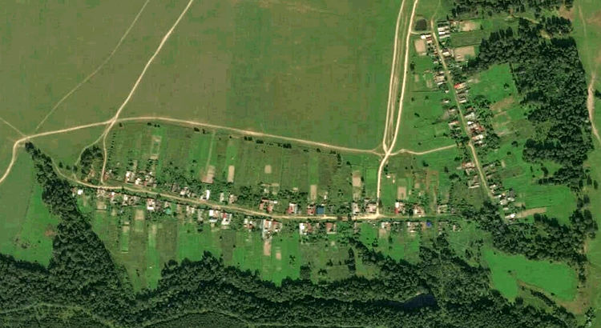

О проекте
Данный сайт посвящен истории деревни Янашбеляк ныне Звениговского района республики Марий Эл.

Визитной карточкой сайта является дерево деревни, которое заполняется по мере поступления информации о жителях.
Ссылки
Контакты
Сайт наполняется его автором Рахмаевым Александром. В случае нахождения ошибок или предложений по добавлению информации, просьба связаться со мной в телеграмм.